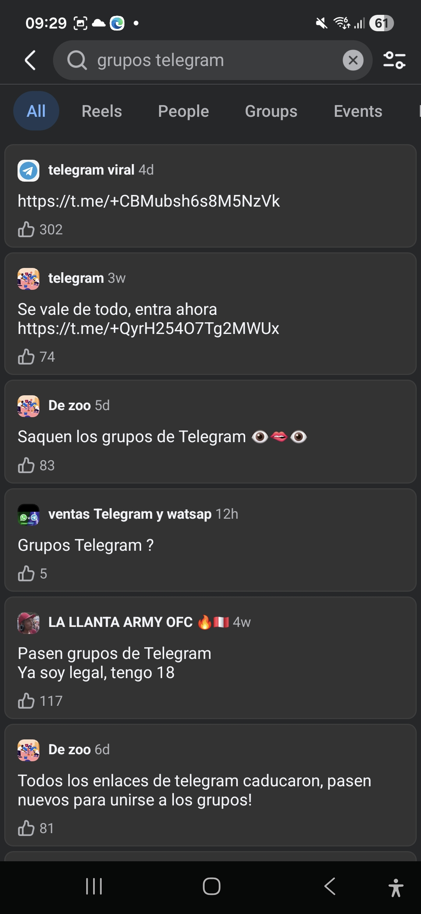

LA NUEVA DARK
En la sombra de las aplicaciones conocidas
La involución de la dark web?
Ya es sabido que la dark web no ha sido tan anónima como se creía. Rumores de que estos sitios web estaban siendo monitoreados, resultaron ser ciertos.. Por lo que, a pesar de que sigue siendo un sitio peligroso para novatos (incluso personas conocedoras), lo cierto es que ya no es lo que era años atrás.
Muchos youtubers han documentado el "declive" de estos sitios, pero aún así, la idea de la dark web, persiste.
Comparto un video de un youtuber que me gusta mucho, que documenta la situación actual de la dark web y cómo ha cambiado con el tiempo.
https://www.youtube.com/watch?v=nfVjFOMJ8wc
"Grupos de amistad" en la dark web
Persiste dentro de la sombra de los gigantes, Facebook por ejemplo, ha sido muy indulgente a la hora de permitir links en comentarios y post. No hay que ir muy lejos para escribir en su buscador "Grupos de amistad", "Grupos de wasap", "Grupos de telegram", dando como resultado un océano de resultados y comunidades, que más temprano que tarde, darás con un grupo con contenido bastante cuestionable.

Uno de estos gigantes es Telegram, debido a su política de no hacer público el número del usuario, ha sido controversial ya que es un obstáculo investigativo.
Una de las prácticas más comunes son los "grupos volátiles".
Telegram ha sido bastante cuestionado por autoridades internacionales, lo que ha obligado a la compañía a intervenir de alguna manera y hacer esto más difícil para el usuario problemático, entonces es donde estos grupos brillan, se pasan contenido ilícito y el grupo eventualmente es eliminado.

¿Mientras más grande sea la empresa tecnológica, más grande será su sombra?
Bueno todo apunta a que si, los ciberdelincuentes han encontrado un "nido de pequeños polluelos", personas no instruidas en el mundo de la tecnología y caen en estos grupos.
Debemos aprender a convivir con estos seres o debemos resguardarnos entregando datos y más datos a nuestra empresa favorita?
El anonimato en la red supone muchos riesgos pero estar sobreexpuesto, en lo personal, creo que también supone muchos riesgos, quizás más de lo que somos capaz de dimensionar.